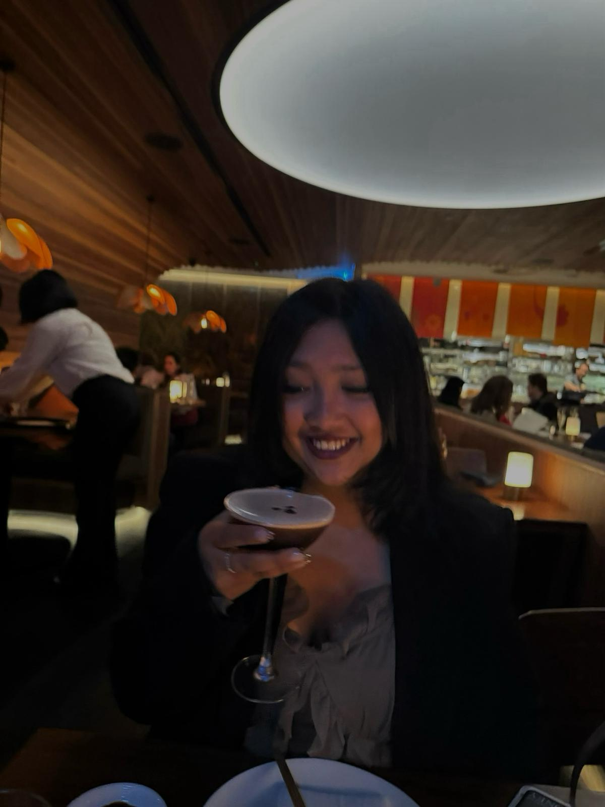

In marketing, they say, 'Be the story' — and here I am, telling mine.
AS
ABOUT ME
As an Economics and Marketing student at the University of Sydney, I am driven by a passion for storytelling in the most creative ways. My challenge is to craft stories that truly resonate with audiences. I've embraced every opportunity to create impactful content, from thumb-stopping Instagram reels to cleverly crafted eDMs.

🚧 Under Construction 🚧
We’re busy building something awesome.
Check back again soon!
Social Media EXPERIENCE
Huddled Co. | March 2024 - July 2024
THE PROBLEM:
Huddled Co, a startup focused on connecting university students and assisting them with more social interactions, needed a strong social media presence and engagement enabling students to collaborate with universities.
ACTIONS TAKEN:
THE RESULTS: